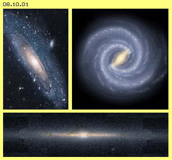
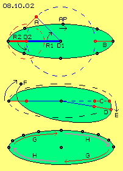
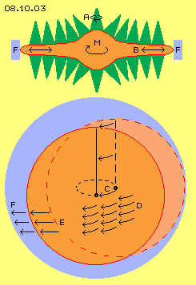
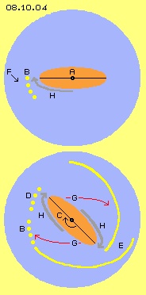
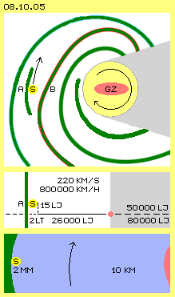
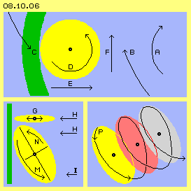

Aether and Dust
All physical appearances are vortices of aether within aether. Unfortunately that unique real existing substance is totally transparent. Motions can be studies only by ´dust´ carried along with aether. Material dust-grains by themselves are vortex-systems, however they radiate light (or other electromagnetic waves) or they are visible via rejection of light. Vortex-systems of micro-cosmos are too small or are moving too fast for direct perception.

Whole universe is filled up with dust and some of these ´grains´ are extreme large in shape of planets or stars. All that stuff builds huge vortex-systems of galaxies. Within galaxies again exist racing fast motions, at the other hand changes take ´aeons´. So we practically have only still-frames for exploring processes of heaven. At the following, an analyse of ´celestial-mechanics´ of our galaxy and sun-system is described, resulting most extraordinary world-view.
Picture 08.10.01 upside left shows photo of galaxy M31 with its light centre and beautiful spiral arms, a most typical appearance of universe. It was suggested, our galaxy would look like rather identical. Recent times however, picture of milky-way was developed (see upside right), where centre shows a ´beam´. That type of ´barred-spiral-galaxy´ is also wide spread in universe, respective it´s assumed this shape must come up inevitably at development process of galaxies. For example, at first comes up only a concentration of celestial bodies via general all-pressure resp. radiation-pressure, resulting spherical galaxies. As soon as rotation is involved (realiter only some round swinging), that beam-structure comes up (like described at the following). Caused by external disturbances - or even by internal ´explosions´ - that shape can dissolve or even is destroyed in total.
This picture at bottom shows a side-view of milky-way. Centre is build by dome-shaped accumulation of stars. Remarkable flat is that far reaching disk (ten times wider than high). That´s typical appearance of spiral galaxies. That graph of milky-way naturally is no real photo, but constructed by astronomers based on many data. So milky-way presents this picture for ´extragalactic´ viewers - for us earthlings however question is how that system functions.
Dynamic of Beam
Stars at centre are not spread equal but it seems that beam functions like a ´rotating carpet sweeper´ and taking all dirt like a ´dustpan´. So there must exist according movements of aether. Well, that motion-pattern is easy to explain by processes shown at picture 08.10.02.

In principle, two circle motions are overlaying. Around central fulcrum D1, a ´clock´ is turning with radius R1 (blue line), clock-wise (all times by view top-down, so from ´north-pole´ of galaxy. See also blue dotted circle). At end of blue ´clock-hand´ a second fulcrum D2 (red) is positioned, around which second hand with radius R2 (red line) is turning. Outer clock is turning counter-clock-wise and double as fast than inner clock (see red dotted circle).
At end of that second red hand is positioned the observed aetherpoint (AP, black). At starting position, both radius show stretched line towards left, so at first that aetherpoint is located far left side. When blue hand did turn upward by 45 degree (see upward showing curved arrow respective position A), same time that second red hand did turn down by 90 degree (see downward showing curved arrow). New position of aetherpoint is upside of place marked D2.
When blue hand goes on turning and now is showing upward (so after turning 90 degree in total), red hand shows inward (after turning 180 degree in total). The aetherpoint (at AP) now is relative near to centre. That overlay results corresponding tracks at following sections. The observed aetherpoint is moving at elliptic-similar track: at the middle near centre at flat section, swinging far out aside, there however at relative sharp curved track (at apex B) running back again.
Opposite to overlays of previous chapters, here movements are running contrary. Also, ´wheels of that gear´ do not turn likely speeds but by relation 1:2. Overlays with other speed-relations result interesting tracks, e.g. like shown at middle section of picture.
Normally, stretched position would come up again right side at C. If now however that red hand is turning too slow (e.g. only by relation 1:1.8), stretched position is achieved some later, e.g. like here marked at D. Apex is shifted some forward in turning sense (see arrow E) and is running ahead original positions more and more (see arrow F). So a loop-shaped track results, i.e. ´beam´ becomes turning as a whole.
Below at this picture, a special characteristic of that movement process is shown. At upside half of track are marked positions of aetherpoint after turning of inner clock by each 22.5 degree. Distances between positions mark different length of way each time-unit. From apex to point near centre comes up acceleration (see red arrows G). From flat section towards outward comes up corresponding deceleration (see grey arrows H).
Overlays of likely-sense motions of previous chapters did result each one phase of acceleration and deceleration. Most fast speed was achieved at wide section of track and I called that motion ´track-with-stroke´. Now here these overlays of circled motions with contrary sense (and revolutions unequal 1:1) result each two phases of acceleration and deceleration. Strange enough now speeds most slow exist at positions most far aside.
That ´rotating dirt-brush´ is shifting dust at its forward-turning surface (at each G) inward by increasing speed - and is shifting outward that dust along its backsides (in turning sense, at each H) by decreasing speed. So central area is ´wiped up´ - however new dust is supplied from poles (resp. here top-down and bottom-up).
Swinging Cones
Impression of revolution comes up and the ´dust´ indeed is rotating. Aether by itself however is relative stationary and is only swinging around by more or less short radius. All aether is swinging by previous motion-pattern, each aetherpoint (nearby) parallel to its neighbours, each around its own fulcrum. The ´dust´ becomes shifted in certain direction only by these ´strokes´, resulting material rotation or flow of particles.

Picture 08.10.03 upside shows longitudinal cross-sectional view through axis of milky-way (M, red), quite schematic. The aether of central ´bulge´ is swinging (by previous beam-motion-pattern) and also at up- and downside surface of disk exist similar swinging motions. As described in details at previous chapters, these circling movements are reduced to each smaller radius into direction of Free Aether.
All neighbours at vertical connecting-line move at a cone-mantle (see A). All neighbours at horizontal level are swinging parallel at analogue cones. Also around that round dome, radius of swinging are decreasing analogue. At this picture that process schematic is marked by cones (green) at upside and downside surfaces of milky-way. Naturally, these cones are drawn much too short. Relation between swinging radius and cone-length is at least 1:10000, cones however could also be hundred times longer.
At any case, strong swinging within that potential-vortex is balanced without problems into vertical direction. As also was mentioned several times, all external disturbances result inward directed wave-strokes, i.e. ´dust´ is spilled top-down and bottom-up towards middle level.
That typical flat pressed disk-shape of spiral-galaxies can come up only by that aether-effect.
Pushing Disk
Problematical however is balancing of motions into horizontal direction. That disk is swinging to and fro, like marked by double arrow B. Within gapless aether, that motion theoretical is running infinite long, i.e. all aether at this plane must swing synchronous. Free Aether F (marked blue) of wide environment stands against like ´stiff massive wall´. Into that direction thus central coarse swinging reaches far out and balancing towards fine swinging of Free Aether must occur other kind.
Below at this picture schematic is shown a cross-sectional view. A disk-shaped surface represents middle plane of whole galaxy, surrounded by area of Free Aether F (light blue). At first, that disk (light red) is positioned at right side and afterward is moving into position (dark red) further downside-left. Track of disk-centre is marked by arrow C. In order to point out once more, aether of that disk does no rotate as a whole, many parallel arrows D are drawn: all aetherpoints are swinging parallel at their relative short radius.
At position drawn here, frontside border of disk is pressing towards left (see arrow E). Also within Free Aether F that pushing wave affects further left. That motion can not be ´cushioned´ within in-compressible aether. At previous chapters was found, any motion into certain direction finally can only end by motion right-angle to. At the following now is to check how that movement process is realized at milky-way.
Dirt-Filing left-side
At picture 08.10.04 only that swing-area A of beam (red) is drawn at centre of milky-way. That (nearby) elliptical track again is drawn only representative for all aetherpoints of that area swinging at analogue tracks, however by much smaller dimensions. As all aether swings parallel, a (seeming) flow appears corresponding to that motion pattern. Vortices of material particles are drifting forward at these tracks-with-stroke, so indeed a ´material´ flow of dust exists. At that beam below-left that motion H exists (see grey arrow).

Free Aether (light blue) stands against that motion (see arrow F) respective decreases speed of that material flow. That´s according to deceleration of flow H when coming towards apex, so there particles are (nearby) stopped. While beam is turning around system axis, it ´puts down´ dust (marked by yellow spots B) at each position of its apex.
Below at this picture, situation is shown after clockwise turning of beam (respective its loop-track) by 45 degree. Flow H still drops off its dust near apex, like here marked by yellow spots at D. Previous dust of position B remains back or is moving forward only relative slow. However that region now comes into sphere of influence of right part of beam.
At its flank G exists accelerated aether motion. However that increased flow is running up delayed motion H, so by parts must escape into sideward area (see arrow G). Previous dust B is pushed further outward by this ´pressure-component´. That process occurs analogue at both sides of beam.
So at the one hand, at decelerated phase of flow (each H) that dust is filed down at each apex-position of beam, at the other hand that dust is pushed further outward by accelerating part of flow (each G). Resulting is that remarkable picture of spiral-arms (e.g. at E), wandering slowly from centre outward, drifting forward in turning sense of system - see previous graph 08.10.01 upside-right that picture of milky-way. Likeness won´t be quite by chance.
Short and compact Beam
If this beam works so perfect, question comes up why it does not reach totally out to border of galaxy. Instead of, that beam ends abruptly at area of transition from dome to disk.
The absolute ideal shape of bodies is a sphere, which here however is build only by dome upside and bottom side of galaxy. Turning movements at sphere-surface is balanced towards Free Aether without problems, like marked at previous picture 08.10.03 by these green cones A. At equator of sphere inevitably comes up an appearance of wave-with-stroke running all around (pointed out once more at following chapter concerning sun). There are overlays of motions of likely sense and these are not conform to overlays of contrary motions at that beam here. That´s why that beam ends at border of dome - and also because contrary pressure of environment hinders beam to reach further out.
This relative brake-effect of Free Aether has direct consequences for beam by itself, as that´s cause for back-turning radius R2. Again that´s causing the ellipse-similar track, at which motions are running from left to right apex and at other section of track are running back again. This functions only at a two-arm beam, because otherwise these way would cross.
At area of that beam, aether is rather ´mixed thoroughly´ by these motions to and fro, while further left and right side of beam, aether is less ´turbulent´. General pressures all times are affecting from fine towards coarse swinging motions (see previous chapters). So stars prevailingly are ´sloshed´ into area of beam. That´s why beams of all galaxies appear high-lighted and areas aside of prevailingly are empty.
Huge and tiny
By picture 08.09.05, dimensions of milky-way and sun-system are marked - which go beyond usual scales and thus are hardly imaginable.

Upside at picture, structure of our galaxy schematic is drawn. At galactic centre GZ previous beam is marked by red ellipse. The sun S (yellow) respective total sun-system is sketched left side. By our perspective, view towards centre (light yellow) is hindered by lots of ´dust´ and opposite part (light grey) is not visible at all. At visible side, spiral arms are marked by green bands. Whole galaxy is right-tuning, by view top-down respective from ´north-pole´ of galaxy. The sun is positioned between two spiral-arms (A and B), near inner side of outer spiral arm.
Some data are shown at middle section of picture. The radius of milky-way is supposed some 50000 to 80000 light-years (LJ) - intelligible because vortex-systems of aether have no fix borders. Sun-system is located at about half distance, so some 26000 light-years from centre. Sun-system is about 15 light-years upside of galactic plane. It is near inner side of spiral arm S (green).
As milky-way is turning clockwise, also sun-system is moving within space by about 220 km/s (recently is also talked about 280 km/s - and thus also central mass of galaxy should be corresponding heavier). For car drivers usual unit of measurement is km/h - that vehicle of sun-system thus is racing around curve by 220 * 3600 resulting about 800000 km/h - and we don´t feel nor become aware of (like otherwise only crews of Ufo within their own ´gravity-system´).
Light takes about 8 minutes for running from sun to earth. Until heliopause (the ´border of attracting forces´ respective area of sun-interactions) it´s further about 150 astronomic units. So sun light needs about 8 * 150 = 1200 minutes = 20 hours for racing to the ´end´ of its system. By most rough estimation thus sun-system has a diameter of 2 ´light-days´ (LT).
Below at this picture these relations are put into scale more common. There is a big river (light blue) flowing around curve, where right bank (red) represents centre of galaxy. Width of river is 10 km, where left bank (green) represents previous spiral arm A. Near that bank of the river, tiny vortex S (yellow) is placed - with diameter of 2 mm. That´s our sun-system!
Certainly, comparisons of aether and water are never correct. However everyone might answer question by himself, whether sun inclusive their planets and all other ´driftwood´ are affected by attraction-forces of right bank - or by pressure of left bank.
Naturally that river does not flow totally uniform but will show manifold additional vortices (especially at areas of spiral arms further inside). Everyone might answer question by himself, whether light-rays (for thousands of years!) can race through that medium straight line and by constant speed.
That picture of comparison is not yet completed, because green bank is no real terra firma but by itself is only some drifting stuff moving little bit slower. That river indeed is double as wide, with additional banks of ´driftwood´ up to its ´marshland´ shores (of Free Aether). Thus water surface has diameter of 40 km. And there is one more additional stuff: at centre stands a tower, about 4 km high, with a pendulum (a ´connecting-line´), which at bottom is swinging by radius of 40 cm or might be only 4 mm (even much wider than total sun-system) - or even much less (see below). ´Pressure´ of that minimal swinging results motions at this huge water surface (respective within total galaxy, because aether is gapless).
Counter-rotating
Picture 08.10.06 now shows situation of sun-system (yellow) near inner side of its spiral-arm (green) by larger scale. Galaxy is right-turning (see arrow A) and affects outward directed ´stroke´ (see arrow B). Contrary to that push, Free Aether shows resistance, also through ´driftwood´ of spiral arm (see arrow C).
Both ´forces´ B and C (realiter only aether-swinging, here however by different strokes) affect some shifted and thus result turning of sun-system. This is left-turning (see arrow D), so counter-rotating to galaxy as a whole. However, also sun-system is not really rotating but only ´swinging-by-left-twist-stroke´.

That twist respective spin or stroke has two important components: the one affects into direction of galaxy-centre (see arrow E), thus affects centripetal pressure. At previous chapter I called this ´the concentrating effect´ of Free Aether onto local vortex systems. The other component of swinging-stroke affects in turning sense of galaxy (see arrow F). At previous chapters I called this ´the conserving effect´ of ambient pressure onto local vortex systems.
If one imagines this motion process as mechanic ´gear´ (even realiter there is no rotation), this sun-system would roll like a wheel along surface of spiral arm. At ´supporting-point´ left side, speed is null, at right side speed is maximum (double as fast as wheel-axis is moving forward). Via ´friction´ of spiral arm, at the one hand motion is delayed, at the other hand via accelerated ´stroke´ turning momentum is feed back into general galactic revolution.
Sloped
Below-left at this picture, vertical cross-sectional view through that area is drawn. Plane of sun-system here is drawn as flat ellipse G. Its swinging towards left and back again towards right side is marked by double-arrows. Inward-motion (towards right) hits onto general outward-stroke (towards left) of counter-rotating galaxy (see arrow H).
As mentioned upside, that general outward-motion can finally be balanced only by motion right-angle to. So turning motion of sun-system may not occur only at this horizontal plane but must escape towards bottom (alternative upward). So position of sun systems becomes a diagonal arranged disk (see picture at bottom quite left) - like ecliptic indeed is sloped to galactic plane and is some tilt to line between sun and galactic centre.
So swinging of ecliptic affects inward pushing some downward (see arrow M), while outward-motion of ecliptic mainly occurs upside (see arrow N). There, movement is conform to galactic pressure H. The aether as a whole can never shift far off, but must swing back to its original place all times. So as there is an outward-motion H, also an inward-motion must exist, e.g. some below. The ecliptic-motion M this will work at least counter some reduced pressure (see arrow I).
Spiral
This picture below-right shows forward-motion of ecliptic within space. According to turning of galaxy also that disk is wandering, here towards upside-right from position of yellow to red and finally to position marked grey. Turning motion within space thus occurs at spiral track P. Alongside spiral arms come up spiral forward rolling motions, i.e. a cylinder-like motion-pattern. This motion is well conform to previous galactic pressures (previous arrows H and I) respective these spiral-forward revolutions are prevailing motion-pattern also further inward at galaxy.
These ´border-vortices´ often exist e.g. at gas-planets (see following chapters) and also are frequent appearance at fluids. As an example, water within curved riverbeds moves just by that spiral turning cylinder along the outside banks. However not only at border but also further at the middle, water moves analogue - and rather analogue galaxy ´flows respective rolls´ around its huge circle at heaven.
This motion process is also comparable with gear-wheels (however only concerning the result). Like at planet- resp. sun-wheel-gears, ´wheel of ecliptic´ (even standing some diagonal) acts as a mediator between speed of inner fast turning (of galaxy-centre) and outer slow turning (here of spiral arm). This is valid between all spiral arms and finally also towards Free Aether as ´resting border´ of galaxy.
Galactic Whirlwind
The beam-spiral-galaxy thus behaves quite similar to a whirlwind, because both are potential vortex systems. Outside exists resting air resp. ´resting´ aether, while towards centre increasing faster turning exists. Both systems need a trigger momentum, at whirlwind e.g. lifting warm air, at birth of galaxy any initial turning. Afterward at whirlwind, air flows spiral inward and upward, at galaxy the ´dust´ becomes concentrated. Both is - self-accelerating - result of ambient pressures, at whirlwind based on stronger static pressure of air-masses of wide environment, at galaxy based on all-pressure of all Free Aether all around that huge system of Bounded Aether.
At atmospheric vortex it´s absolutely clear, no kind of any ´attracting forces´ are necessary - and totally likewise no supposed attraction of gigantic masses at centre of galaxies are demanded (where attraction through Nothing anyhow is not imaginable and really impossible). By common understanding of gravity-attraction e.g. previous beams and many other appearances never could come up - what´s well known or at least everybody could know, however never is spoken about.
Isaac Newton detected laws of (earthly) gravity and extended its application (unsuitably) at planet systems, calculation of demanded ´masses´ of celestial bodies and their centrifugal forces and so on. Expressly he did not want to interpret that appearance of gravity as an ´attraction´, nevertheless all successors reduced gravity to that understanding. Newton was a Britisch man and thus probably notorious tea-drinker. If he would had stared more intensive into teacup - physics would have gone less astray, concerning world-view of total cosmos, of galaxy, of sun-system and much more. The elders well did know about existence of aether - however physicists did not cope with its properties.
Drifting within Aether
For example one did believe, ´aether-winds´ should buzz around ears as earth and sun-system and galaxy are racing through space by these tremendous speeds. One did believe or even does believe, real materia exists at the one hand and (possibly) some aether. However it´s ageold wisdom of mankind, all is one.
So question still is, why we don´t notice anything from that mad race through space. The secret of that ´Ufo´s-own gravity-system´ is simple: all dust and all celestial bodies are accumulations of atoms and these are vortices systems of aether within aether. All atoms have certain motion-pattern - and all become ´deformed´ by stroke of local aether, all likely kind, no matter it´s ground, water or air - and naturally also atoms of our body. Plain and simply everything is swimming within aether, pushed forward by strokes of local aether-swinging. Aether does not drum from outside and strokes won´t bother our surface. Aether at our current position inclusive its local strokes is swinging through any atom - and because we are drifting through space totally according to that asymmetric motion-pattern, we can not feel nor notice anything about.
Motion of previous beam here simply was shown at one level, however thus would come up some ´dam-up´ (like mentioned upside). At reality, all movements occur into all three dimensions same time. That beam-motion-pattern shows phases of acceleration and correspondingly must exist phases of deceleration (because within general ´stationary´ aether all motions finally must come back to original place). So motions of that beam would shake that dust only some to and fro.
Each overlay results (symmetric) acceleration and deceleration. However it´s all times valid, there is one time-unit with slow movement and one time-unit with faster movements - and within that phase of fast motion, longer distances are done - and that´s why any ´stroke´ results forward-movement of all particles drifting within aether. Vortex-system of every atom is shifted little bit forward within space by every single tiny stroke. Aether by itself does not wander corresponding wide distances, but is only swinging at its place, one aetherpoint next its neighbours.
Movements of aether are running by scale of light, fine swinging of Free Aether like coarse swinging of Bounded Aether. According to revolutions of galaxy we travel through space with racing 220 or even 280 km/s - however that´s not even one per-mil of these 300000 km/s which aether anyhow is moving all times by its circled swinging motions. Corresponding ´minimal´ also these accelerations and decelerations of overlays must be and so tiny are all these deformations of previous atoms - however at a whole resulting these gigantic movements of ´dust´ anywhere.
Aether is transparent, however hard like steel - and like that solid piece it´s internal not really resting but all times racing fast by various movement-pattern. Only if that gapless aether is assumed to be unique real existing substance, suitable aspects arise for explanation of that strange Unknown-Flying-Object called Milky-Way.